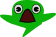

Bienvenido a Tumbafantis 
Este es un proyecto de videojuego
nuevo que con ansias buscabamos presentar
a nuestros seguidores y usuarios de Siwantri games,
en esta presentación te introduciremos lo principal
sobre este nuevo videojuego y al final de la pagina
podras jugar la demo del primer nivel,
"Sendero tumbarbol".
Sinopsis 
Eres una tumba llamada tumbi,
vives en tumbaria,un bosque
sobrenatural lleno de mausoleos
y catacumbas,y te dedicas a
liberar a los fantis de
su tragico encierro en este
plano terrenal del bosque,debes
apresurarte,salta,corre y esquiva,
por que tus enemigos siempre trataran
de pegarte en la cabeza,Balimon
no se anda con jueguitos.
Descripciones
tumbi
Nuestro carismatico protagonista,una tumba animada con la importante tarea de capturar a los fantis y llevarlos al mas alla.
Fantis
Espiritus en pena que tumbi debera llevar al mas alla,son super escurridizos.
Demobalas
Las balas de [CLASIFICADO] no quieren que te lleves a los fantis,ve con mucho cuidado.
Merrianit?
Espero todos esten emocionados por este nuevo personaje,espero encuentren su relación con el otro juego que estamos desarrollando en paralelo. Corran de su pala y eviten sus gritos,Merrianit no se anda con juegos.